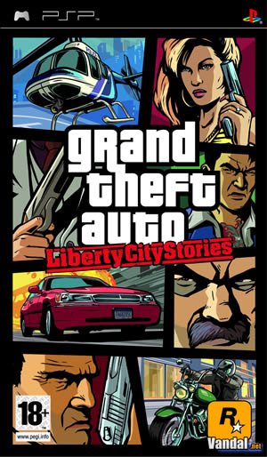
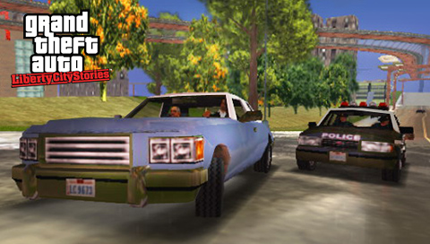
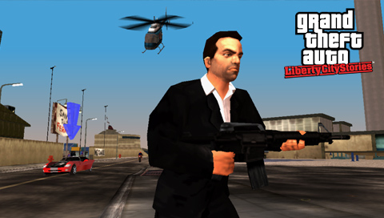
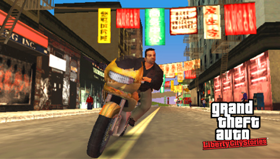
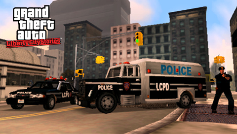

Grand Theft Auto: Liberty City Stories

Descripción
Grand Theft Auto: Liberty City Stories nos lleva de vuelta a Liberty City, donde nos ponemos en la piel de Toni Cipriani, un miembro de confianza de la familia mafiosa Leone que regresa a la ciudad después de pasar un tiempo escondido tras asesinar a un miembro de una familia rival.
A partir de ese momento, Toni tendrá que ayudar a los Leone a recuperar el control de la ciudad, enfrentándose a otras organizaciones criminales, políticos corruptos y todo tipo de enemigos. Sin embargo, no todo será tan sencillo, ya que incluso dentro de su propia familia tendrá que lidiar con situaciones bastante complicadas.
El juego recupera la clásica libertad de la saga, permitiéndonos explorar Liberty City, completar misiones y abrirnos camino en el mundo del crimen organizado. Todo ello con una historia ambientada antes de los acontecimientos de GTA III.
Capturas del videojuego




Información del videojuego
| Desarrollador | Plataforma | Fecha de lanzamiento |
|---|---|---|
| Rockstar Leeds, Rockstar North | iOS, PS2, Android, Kindle, PSP | 25 de octubre de 2005 |